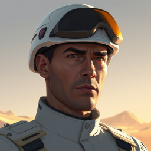

Objetivo: destruir todos los edificios enemigos. Los pozos petroleros no cuentan para la victoria.
| Cámara | Desplazamiento con el mouse en los bordes de la pantalla (se desactiva en Opciones) |
| Menú de partida | Esc o F10: reanudar, opciones, controles, reiniciar y abandonar |
| Curación | Las unidades se curan junto al edificio que las produce: infantería en el cuartel, vehículos en la fábrica, barcos en el astillero |
| Escaramuza | Mapas Cruce, Lagos y Meseta; elección de posición inicial |
| Entrenamiento | Recorrido guiado de cinco pasos desde el menú |
| Misiones navales | Una misión naval nueva en cada campaña |
| Opciones | Calidad gráfica, sombras, tamaño de la interfaz, colores accesibles, volumen y velocidad de la cámara |
| Historial | Acciones por minuto y cuadros por segundo; exportación a CSV |
| Flota | Astillero (requiere costa), lancha patrullera y fragata. Los barcos solo navegan por el agua; la fragata necesita que otra unidad vea el objetivo |
| Mapas | Selector de plantillas en el menú, incluido el nuevo mapa «Canal» |
| Campaña verificada | Con cuenta, el servidor vuelve a simular la misión antes de registrar las estrellas |
| Campaña | Tres campañas de tres misiones, una por facción, con objetivos, eventos y estrellas |
| Árbol del comandante | Tres ramas por facción con poderes y mejoras pasivas. Se abre desde el panel derecho |
| Perfil e historial | Avance de campaña e historial de partidas guardados en el navegador y, con cuenta, en el servidor |
| Diseño por facción | Interfaz, emblemas, materiales y sonidos propios de cada facción |
| Héroe | Uno por jugador desde rango 4, en el cuartel. Comando Atlas (francotirador), Mariscal de Hierro (aura de daño) y Jefe rebelde (camuflado) |
| Mapas | Editor de mapas con rocas, agua, depósitos y pozos. El agua bloquea a las unidades terrestres; los aviones la sobrevuelan |
| Sonido | Efectos generados en el navegador. Botón «Sonido» o tecla M para silenciar |
| IA | Reúne fuerzas en un punto de concentración, ataca la producción enemiga y se retira si pierde la mayor parte de su fuerza |
| Red Guerrillera | Tercera facción. Sin energía. Rebeldes camuflados, red de túneles, chatarra, técnico, artillería ligera y sabotaje |
| Superarmas | Requieren rango 3. Una por jugador. Cargan 5 minutos. El temporizador es visible para ambos jugadores |
| Helicóptero (Hierro) | Ataca sin volver a rearmarse. Lo dañan el antiaéreo, la torre y la infantería |
| Ingeniero | Captura edificios enemigos (excepto el centro de mando) en 6 s y pozos en 2 s |
| Camuflaje | Un rebelde oculto solo se ve a 4 de distancia de una unidad enemiga o a 8 de una defensa |
| Repeticiones | Al terminar, «Descargar repetición». En el menú, «Ver repetición» con velocidad y vista seleccionables |
| Facciones | Coalición Atlas (aviación, tecnología) y Frente Hierro (tanque pesado, horda, artillería) |
| Pozos petroleros | La infantería los captura en 4 s. Dan 20 créditos cada 3 s. Si se destruyen, vuelven a ser neutrales |
| Aviación (Atlas) | El avión dispara 2 misiles y vuelve al aeródromo a rearmarse. Solo el antiaéreo, la torre y la infantería lo dañan |
| Antiaéreo | Vehículo de la fábrica, eficaz contra aviones |
| Poderes de comandante | Las bajas enemigas dan experiencia. Cada ascenso da un punto para desbloquear un poder. Se usan desde el panel derecho |
| Arrastrar clic izquierdo | Seleccionar unidades |
| Clic / Shift + clic | Seleccionar / sumar a la selección |
| Doble clic en unidad | Seleccionar todas las de ese tipo en pantalla |
| Clic derecho | Mover, atacar, recolectar, capturar, reparar. Con un edificio: punto de reunión |
| Q + clic | Atacar-mover |
| X / Esc | Detener / cancelar o quitar selección |
| Ctrl o Alt + 1…0 | Formar grupo con la selección (Shift + número: sumar al grupo) |
| 1…0 (dos veces) | Seleccionar el grupo (centrar la cámara en él) |
| W A S D, flechas, rueda, botón central | Cámara |
| Táctil | Tocar para seleccionar y ordenar. Arrastrar para desplazar. Pellizcar para acercar. «Área» activa la selección por arrastre |
| Fecha | Modo | Facción | Rival | Resultado | Duración | APM | FPS |
|---|
Configure la partida contra la IA y seleccione «Iniciar partida».
Elija la facción con la que desea combatir. Cada campaña tiene cuatro misiones.
Elija facción. La partida inicia cuando ambos jugadores marcan «Listo».